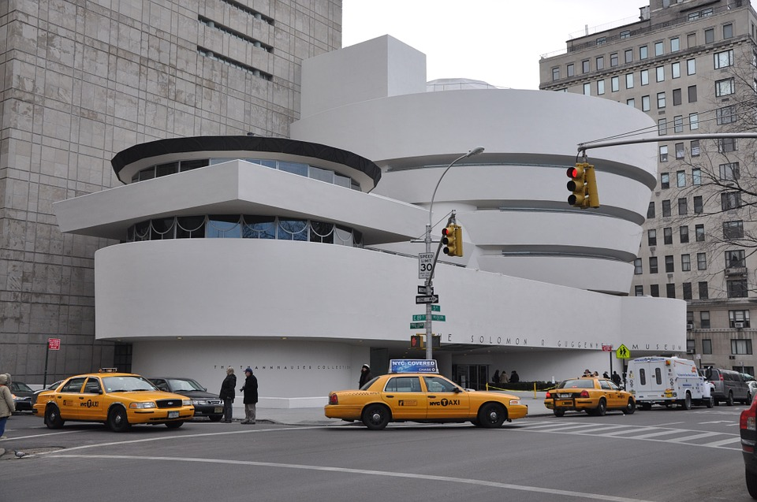
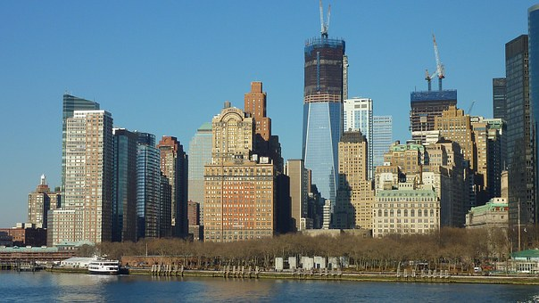
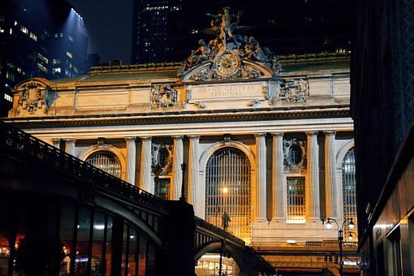

The City of New York, often called New York City or simply New York, is the most populous city in the United States. With an estimated 2015 population of 8,550,405 distributed over a land area of about 302.6 square miles (784 km2), New York City is also the most densely populated major city in the United States. Located at the southern tip of the state of New York, the city is the center of the New York metropolitan area, one of the most populous urban agglomerations in the world. A global power city, New York City exerts a significant impact upon commerce, finance, media, art, fashion, research, technology, education, and entertainment, its fast pace defining the term New York minute. Home to the headquarters of the United Nations, New York is an important center for international diplomacy and has been described as the cultural and financial capital of the world.
| NYC | ||||
|---|---|---|---|---|
|  | ||||
|  |  |